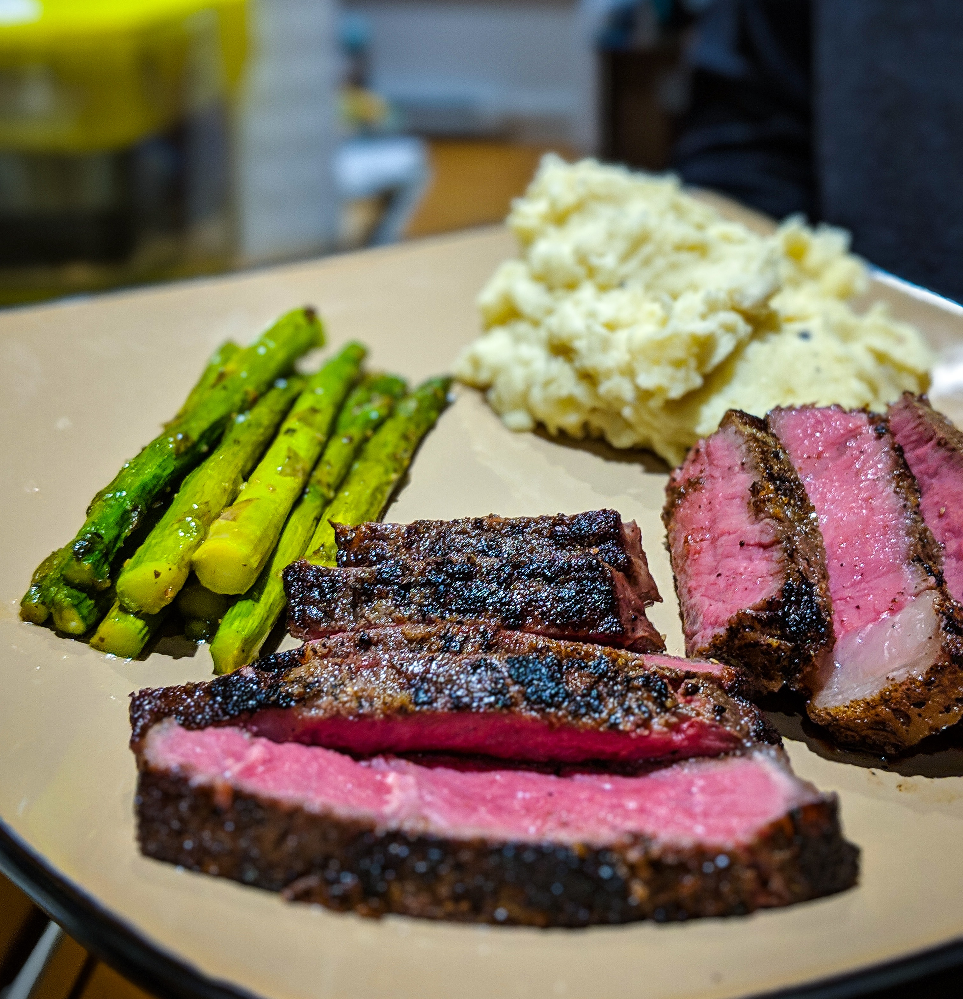

Meat 'n Taters

Description
Steak and potoates.
Ingredients
- 1x nice cut of beef
- 1.5lbs Yukon Gold Potatoes
- 4x tbsp sour cream
- 2x tbsp kerrygold unsalted butter
- Asparagus or broccoli
Steps
- Peel and dice your taters. Don't be religious about the peeling, a lil skin is good for ya
- Bring a salted pot of water to boil
- Add in your taters. Boil for about 18 mins or until taters are slipping off a fork. Once taters are done, save about a cup of the potato water (it's good, starchy stuff)
- Mash taters w/ sour cream, butter. Add in splashes of the tater water and mix well until reaching your desired consistency. S+p to taste
- Get a nice cut of beef
- Don't fck up your nice cut of beef. Read seriouseats steak guide if newbie
- Cook the green stuff. Oven roast with a lil olive oil, salt, and pepper your best bet.
- Can you tell I hate writing html content